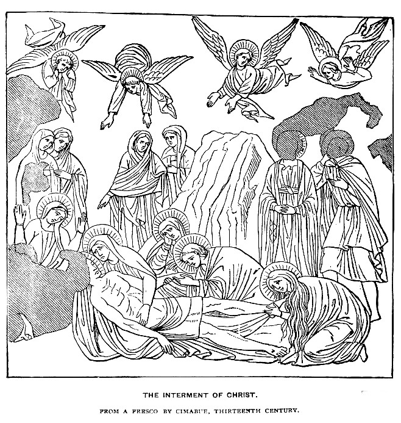

This
week's lessons: Jeremiah
31:31-34 , Psalm
51:1-12 or Psalm119:9-16,
Hebrews
5:5-10, John
12:20-33
Middle-School Pew-work
|
 |
Jesus says, “Whoever serves me must also follow me.” In what ways do you serve and follow Jesus? ________________________________________________________________________________________________________________________________________________________________________________________________________________________________________________________________________________________________________________________________________________________________________________________________________________________________________________________________________________________________________________________________________________________________________________________________________________________________________ |
Next week: Mark 11:1-11 or John 12:12-16, Psalm 118:1-2, 19-29; Isaiah 50:4-9a, Psalm 31:9-16, Philippians 2:5-11, Mark 14:1-15:47 or Mark 15:1-39, (40-47)